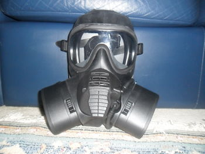

GSR (англ. General service respirator) - основний протигаз збройних сил Великої Британії, замінивши S10 на початку 2015 року.  Створений компаніями Scott Safety та DSTL, ця маска має кращі характеристики у порівнянні з її предком, маско S10 що підвищує комфорт та захист особового складу.
З 2000 року проводилися проектні роботи та дослідження для розробки нового протигазу загального використання для британських збройних сил. Новий протигаз, спроектований на 3D-принтері, був розроблений, щоб краще відповідати на зміну характеру загрози для солдатів та покращити захист, комфорт та сумісність обладнання. GSR також був адаптований для роботи у тропіках та високогірних умовах.Офіційне затвердження GSR відбулося 2010-08-26. Навчання розпочалося в наступному році. Британські сили були першими, хто використав маску в польових умовах.Всі рекрути навчаються в роботі з використанням проигазу, а існуючий персонал тренуються з ним. Станом на січень 2015 року до британських Збройних Сил було доставлено 309,228 протигазів.
Конструкція фільтра на GSR сильно відрізняється від більшості військових фільтрів на ринку в даний час. У фільтрах є система блокування, яка дозволяє замінювати фільтри швидше та ефективніше, ніж зі старими фільтрами з різьбою. Варіанти GSRe / GSReS також можуть бути переконфертовані в польових умовах, задля використання звичайних фільтрів з різьбою.
GSR - амбідекстерна маска, яка може використовуватись як шульгами так і правшами. Інша особливість цього протигазу полягає у тому, що під час відсутності фільтру, клапан вдоху буде заблокованим, що перешкоджає випадковому зараженню отруйними речовинами